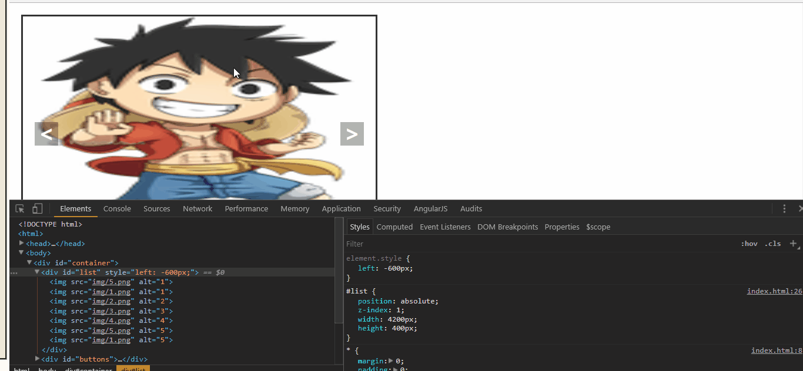
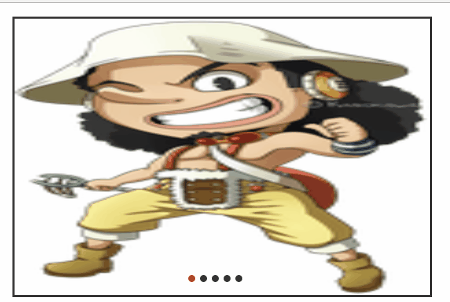
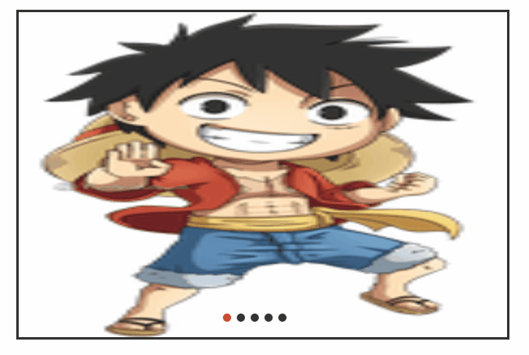
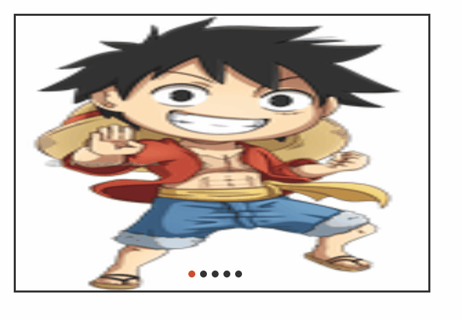
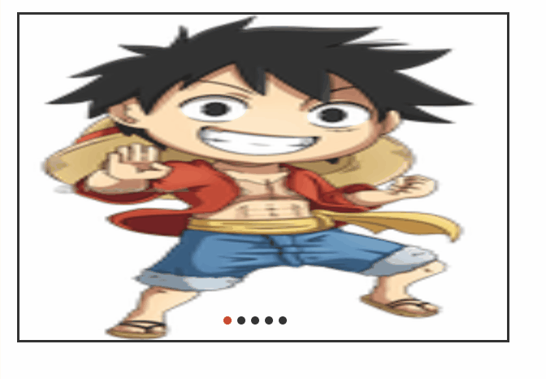

js原生的轮播，原理以及实践
轮播，无论是文字轮播还是图片轮播，他们的原理是一样的，都是通过定时器执行循环展示和影藏。
一、手动轮播
（1）原理
一系列的大小相等的图片平铺，利用CSS布局只显示一张图片，其余隐藏。通过计算偏移量利用定时器实现自动播放，或通过手动点击事件切换图片。
（2）实现
如何利用css实现布局显示一张图片？主要的属性是over-follow:hidden。首先给容器一个固定的长和宽，然后设置over-flow:hidden。
1、html结构
首先父容器container存放所有内容，子容器list存在图片。子容器buttons存放按钮小圆点。

<div id="container"> <div id="list" style="left: -600px;"> <img src="img/5.png" alt="1" /> <img src="img/1.png" alt="1" /> <img src="img/2.png" alt="2" /> <img src="img/3.png" alt="3" /> <img src="img/4.png" alt="4" /> <img src="img/5.png" alt="5" /> <img src="img/1.png" alt="5" /> </div> <div id="buttons"> <span index="1" class="on"></span> <span index="2"></span> <span index="3"></span> <span index="4"></span> <span index="5"></span> </div> <a href="javascript:;" id="prev" class="arrow"><</a> <a href="javascript:;" id="next" class="arrow">></a> </div>
优化，无缝滚动。
当你从最后一张图切换回第一张图时，有很大空白，利用两张辅助图来填补这个空白。
这里补充下无缝滚动，直接看代码，复制最后一张图片放置第一张图片前，同时复制第一张图片放置最后一张图片的后面。并且，将第一张图片辅助图（实际上是实际显示的第5张图片隐藏起来，故设置style="left: -600px;"）
2、css样式
1、对盒子模型，文档流的理解，绝对定位问题。
2、注意list的overflow:hidden;只显示窗口的一张图片，把左右两边的都隐藏起来。
3、确保buttons中每个span所在层置顶，将其设置为最顶端。
* { margin: 0; padding: 0; text-decoration: none; } body { padding: 20px; } #container { position: relative; width: 600px; height: 400px; border: 3px solid #333; overflow: hidden; } #list { position: absolute; z-index: 1; width: 4200px; height: 400px; } #list img { float: left; width: 600px; height: 400px; } #buttons { position: absolute; left: 250px; bottom: 20px; z-index: 2; height: 10px; width: 100px; } #buttons span { float: left; margin-right: 5px; width: 10px; height: 10px; border: 1px solid #fff; border-radius: 50%; background: #333; cursor: pointer; } #buttons .on { background: orangered; } .arrow { position: absolute; top: 180px; z-index: 2; display: none; width: 40px; height: 40px; font-size: 36px; font-weight: bold; line-height: 35px; text-align: center; color: #fff; background-color: RGBA(0, 0, 0, .3); cursor: pointer; } .arrow:hover { background-color: RGBA(0, 0, 0, .7); } #container:hover .arrow { display: block; } #prev { left: 20px; } #next { right: 20px; }
3、JS实现
首先我们先实现出手动点击左右两个箭头切换图片的效果：
window.onload = function() { var list = document.getElementById('list'); var prev = document.getElementById('prev'); var next = document.getElementById('next'); function animate(offset) { //获取的是style.left，是相对左边获取距离，所以第一张图后style.left都为负值， //且style.left获取的是字符串，需要用parseInt()取整转化为数字。 var newLeft = parseInt(list.style.left) + offset; list.style.left = newLeft + 'px'; if(newLeft<-3000){ list.style.left = -600 + 'px'; } if(newLeft>-600){ list.style.left = -3000 + 'px'; } } prev.onclick = function() { animate(600); } next.onclick = function() { animate(-600); } }
效果如下图所示

运行后我们会发现，一直点击右箭头 ，会出现空白，而且，不能回到第一张图片。要点击左箭头才能回到第一张图片。
原因是我们利用偏移量left来获取图片，当看到left值小于3600时，因为没有第8张图片就出现空白，所以这里我们需要对偏移量做一个判断。
if(newLeft<-3000){ list.style.left = -600 + 'px'; } if(newLeft>-600){ list.style.left = -3000 + 'px'; }
加了这个判断就是说，在实时的left值在小于-3000的时候，通过操作dom元素直接把left值给到-600，回到初始化的状态。
但是轮播有自动轮播和手动轮播。上面基本实现的是手动点击进行轮播（手动轮播）。
二、自动轮播
要实现自动，必须有定时器进行计时。
对于定时器，有必要说明一下setInterval()跟setTimeout的区别了。
简单来说，setInterval()执行多次，setTimeout()只执行一次。
所以自动轮播需要我们每隔一段时间执行一次，选择setInterval()函数。
/*自动循环播放*/ var timer; function play(){ timer = setInterval(function(){ prev.onclick(); },1500) } play();

完美实现了自动轮播
但是，当我们想仔细看某一张图片时候，要把图片停住，我们清楚定时器就可以
三、手动可以干预轮播
我想仔细看某一张照片时候，要图片停住，需要用到window.clearInterval 这个方法。
这里，我们需要对其DOM操作，需要获取整个轮播图区域，鼠标进入到容器区域就清空计时器。
/*鼠标放上（离开）对应轮播暂停（播放）*/ var container = document.getElementById('container'); function stop() { clearInterval(timer); } container.onmouseover = stop; container.onmouseout = play;
效果，如下图所示：

一个鼠标放上轮播暂停的实现就完美实现了。
现在回顾一下，的确很简单，不是很难，并不是必须要用插件实现，原生的js也可以实现，你可以优化一下封装成自己的轮播插件。
（1）容器的css布局。
（2）每一次轮播通过偏移量left实现，手动轮播的按钮绑定每一次偏移量增加还是减少一张照片宽度的偏移量。
（3）自动轮播，通过setInterval()方法实现定时器，执行下一张的点击函数
（4）鼠标控制轮播的暂停和继续。通过onmouseover为暂停，onmouseout为继续。
完整代码：


<!DOCTYPE html>
<html>
<head>
<meta charset="utf-8" />
<title></title>
<style type="text/css">
* {
margin: 0;
padding: 0;
text-decoration: none;
}
body {
padding: 20px;
}
#container {
position: relative;
width: 600px;
height: 400px;
border: 3px solid #333;
overflow: hidden;
}
#list {
position: absolute;
z-index: 1;
width: 4200px;
height: 400px;
}
#list img {
float: left;
width: 600px;
height: 400px;
}
#buttons {
position: absolute;
left: 250px;
bottom: 20px;
z-index: 2;
height: 10px;
width: 100px;
}
#buttons span {
float: left;
margin-right: 5px;
width: 10px;
height: 10px;
border: 1px solid #fff;
border-radius: 50%;
background: #333;
cursor: pointer;
}
#buttons .on {
background: orangered;
}
.arrow {
position: absolute;
top: 180px;
z-index: 2;
display: none;
width: 40px;
height: 40px;
font-size: 36px;
font-weight: bold;
line-height: 35px;
text-align: center;
color: #fff;
background-color: RGBA(0, 0, 0, .3);
cursor: pointer;
}
.arrow:hover {
background-color: RGBA(0, 0, 0, .7);
}
#container:hover .arrow {
display: block;
}
#prev {
left: 20px;
}
#next {
right: 20px;
}
</style>
</head>
<body>
<div id="container">
<div id="list" style="left: -600px;">
<img src="img/5.png" alt="1" />
<img src="img/1.png" alt="1" />
<img src="img/2.png" alt="2" />
<img src="img/3.png" alt="3" />
<img src="img/4.png" alt="4" />
<img src="img/5.png" alt="5" />
<img src="img/1.png" alt="5" />
</div>
<div id="buttons">
<span index="1" class="on"></span>
<span index="2"></span>
<span index="3"></span>
<span index="4"></span>
<span index="5"></span>
</div>
<a href="javascript:;" id="prev" class="arrow"><</a>
<a href="javascript:;" id="next" class="arrow">></a>
</div>
</body>
</html>
<script>
window.onload = function() {
var list = document.getElementById('list');
var prev = document.getElementById('prev');
var next = document.getElementById('next');
function animate(offset) {
/*获取的是style.left，是相对左边获取距离，所以第一张图后style.left都为负值，
且style.left获取的是字符串，需要用parseInt()取整转化为数字。*/
var newLeft = parseInt(list.style.left) + offset;
list.style.left = newLeft + 'px';
if(newLeft < -3000) {
list.style.left = -600 + 'px';
}
if(newLeft > -600) {
list.style.left = -3000 + 'px';
}
}
/*上一步*/
prev.onclick = function() {
animate(600);
}
/*下一步*/
next.onclick = function() {
animate(-600);
}
/*自动循环播放*/
var timer;
function play() {
timer = setInterval(function() {
prev.onclick();
}, 1500)
}
play();
/*鼠标放上（离开）对应轮播暂停（播放）*/
var container = document.getElementById('container');
function stop() {
clearInterval(timer);
}
container.onmouseover = stop;
container.onmouseout = play;
}
</script>
四、小点也随着图片进行轮播
首先要能拿到有多少个小点的数组，然后每一次的下一步的时候判断一下当前的小圆点的标志位。
（1）当标志位大于数组的长度时候，需要把标志位赋值为初始值
/*上一步*/ prev.onclick = function() { index = index -1; if(index < 1) { index = 5; } buttonShow(); animate(600); } /*下一步*/ next.onclick = function() { index = index + 1; if(index > 5) { index = 1; } buttonShow(); animate(-600); }
（2）每执行一次下一步，标志位temp+1，同时将圆点的上一个样式清除，下一个显示选中样式。
function buttonShow() { /*console.log(buttons.length);*/ /*清除之前的样式*/ for(var i = 0; i < buttons.length; i++) { if(buttons[i].className === 'on') { buttons[i].className = ''; } } /*数组从0开始，temp从-1开始*/ buttons[index - 1].className = 'on'; }
最后效果如下图所示：

五、小点可以点击到对应的图片上
突然发现图片下边还有一堆小点，需要给增加点击事件，点击哪一个点，就到哪一张图片上。
/*小圆点的点击事件*/ for(var i =0;i<buttons.length;i++){ buttons[i].onclick = function (){ console.log(i); /*偏移量的获取：获取鼠标的小圆点的位置，用this把index绑定到对象buttons[i]上*/ /*由于index是自定义属性，需要用到getAttribute()这个dom的2级方法，去获取自定义的index属性*/ var clickIndex = parseInt(this.getAttribute('index')); var offset = 600*(index-clickIndex); animate(offset); index = clickIndex; buttonShow(); } }

要大功告成了，但是发现控制台会发现打印出来的永远的是i=5。
“对javascript来说，由for语句创建的变量i即使在for循环执行结束后，也依旧会存在于循环外部的执行环境中。”
就是说，js没有块级作用域这东西，（可能我C写多了，混淆了）。在第一次循环（从 i=0 到 4 这一过程）结束后，最后的 i 获取到的为 buttons.length 的值被
保存在for循环之外，最后鼠标点击任何一个小圆点时，自然访问的一直是 i=5 了。
使用立即函数
/*小圆点的点击事件*/ for(var i = 0; i < buttons.length; i++) { /*使用立即函数*/ (function(i) { buttons[i].onclick = function() { console.log(i); /*偏移量的获取：获取鼠标的小圆点的位置，用this把index绑定到对象buttons[i]上*/ /*由于index是自定义属性，需要用到getAttribute()这个dom的2级方法，去获取自定义的index属性*/ var clickIndex = parseInt(this.getAttribute('index')); var offset = 600 * (index - clickIndex); animate(offset); index = clickIndex; buttonShow(); } })(i) }
这里涉及到js的闭包问题。
完美原生js实现轮播，原理以及实践。总结一下：
原理：（1）使用的是css只显示一张图片，其余隐藏。通过计算偏移量利用定时器实现自动播放，或通过手动点击事件切换图片。
实践：http://www.mwcxs.top/%E8%BD%AE%E6%92%AD/index.html
欢迎访问：
1、云商城isv系统http://isv.suningcloud.com/mpisv-web/index
2、云商城消费者门户http://www.suningcloud.com/promotion/index/experience_center.html

昵称：
退出 订阅评论
[Ctrl+Enter快捷键提交]
· 人民日报评论同天生日募捐：慈善不能有新意而无心意
· 火绒回应拦截腾讯程序：QQ推广产品和病毒行为一致
· 《王者荣耀》全新模式：五军对决 每局8分钟
· Ruby 2.5.0发布
· iPhone X砍单四成？相关公司集体否认，但苹果概念股已大跌
» 更多新闻...
· 以操作系统的角度述说线程与进程
· 软件测试转型之路
· 门内门外看招聘
· 大道至简，职场上做人做事做管理